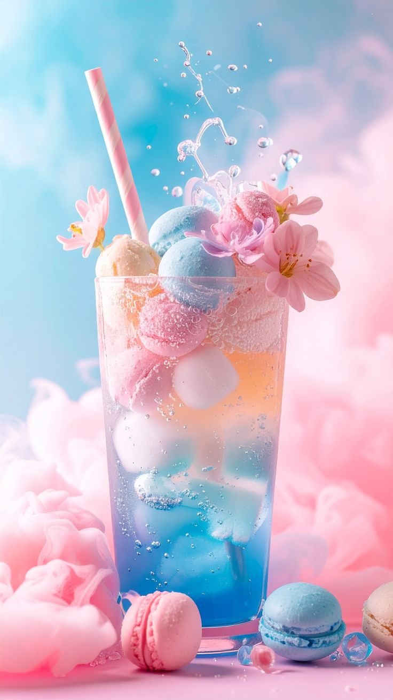
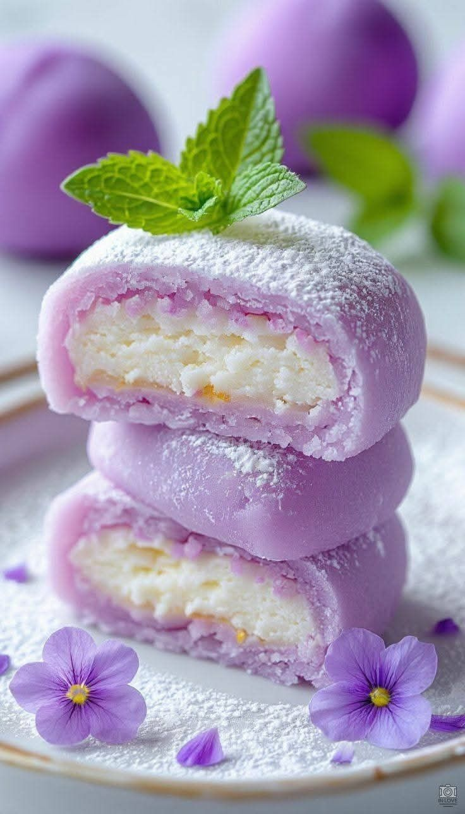

Produk 1: pink Scoop

[overflow: visible]
Es krim pink adalah hidangan penutup yang tampil dengan warna cantik dan menggoda, biasanya memiliki rasa buah seperti stroberi yang manis dan sedikit asam. Teksturnya lembut dan creamy, memberikan sensasi dingin yang menyegarkan di setiap gigitan. Selain rasanya yang lezat,tampilannya yang estetik membuat es krim ini sangat menarik, terutama bagi anak-anak dan remaja.
Es krim pink adalah hidangan penutup yang tampil dengan warna cantik dan menggoda, biasanya memiliki rasa buah seperti stroberi yang manis dan sedikit asam. Teksturnya lembut dan creamy, memberikan sensasi dingin yang menyegarkan di setiap gigitan. Selain rasanya yang lezat,tampilannya yang estetik membuat es krim ini sangat menarik, terutama bagi anak-anak dan remaja.
Produk 2: Cool Stick

Produk 3: Chill Drink

[overflow: scroll]
Minuman segar merupakan pilihan tepat untuk melepas dahaga, terutama di cuaca panas. Biasanya dibuat dari campuran buah-buahan, sirup, atau teh yang disajikan dengan es batu. Rasanya menyegarkan, bisa manis, asam, atau kombinasi keduanya. Selain menyegarkan, minuman ini juga memberikan energi dan membuat tubuh terasa lebih rileks.
Minuman segar merupakan pilihan tepat untuk melepas dahaga, terutama di cuaca panas. Biasanya dibuat dari campuran buah-buahan, sirup, atau teh yang disajikan dengan es batu. Rasanya menyegarkan, bisa manis, asam, atau kombinasi keduanya. Selain menyegarkan, minuman ini juga memberikan energi dan membuat tubuh terasa lebih rileks.
Produk 4: Sweet Mochi

[overflow: auto]
Mochi ungu adalah camilan khas dengan tekstur kenyal dan lembut yang terbuat dari tepung beras ketan. Warna ungunya berasal dari ubi ungu atau taro, yang memberikan rasa manis alami dan aroma khas. Biasanya diisi dengan krim atau pasta lembut di dalamnya. Mochi ini tidak hanya enak, tetapi juga memiliki tampilan unik yang menarik perhatian.
Mochi ungu adalah camilan khas dengan tekstur kenyal dan lembut yang terbuat dari tepung beras ketan. Warna ungunya berasal dari ubi ungu atau taro, yang memberikan rasa manis alami dan aroma khas. Biasanya diisi dengan krim atau pasta lembut di dalamnya. Mochi ini tidak hanya enak, tetapi juga memiliki tampilan unik yang menarik perhatian.